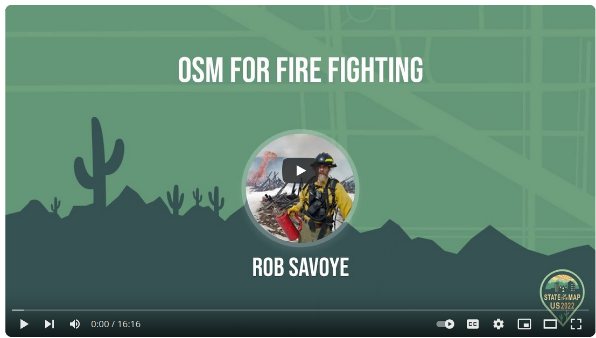

Conflating Highway and Trail Data¶
This is focused only on highway and trail data in the US, but should be useful for other countries. In particular, this is focused on the primary goal of improving OpenStreetMap data in remote areas as these are used for emergency response. Most of these roads and trails are in OSM already, some from past imports, some traced off of satellite imagery.
I did a talk at SOTM-US in Tucson about this project called OSM For Fire Fighting. This conflation software was developed to improve the quality of the remote highway data in OpenStreetMap. This is not an import of new data, only updating existing features with a focus on improved navigation. Importing new features from these datasets uses a different process, so it's better to not mix the two.

While there are details in the the datasets that would be useful, the initial set is the name, the reference number, and the vehicle class appropriate for this highway. Not this can change over time, so if the smoothness tag is in the OSM feature, it's assumed that value is more accurate.
The primary purpose is to clean up the TIGER import mess, which is often inaccurate. This leads to navigation problems as sometimes what is in OSM is not what the street sign says. Since there are multiple datasets supplied by government agencies with a good license for OSM, we data mine these through conflation to get the best name and reference number.
Although most of the fields in these datasets aren't useful for OSM, some are like is it a seasonal road, various off road vehicle access permissions, etc... since this is also useful for navigation. Any tags added or edited will follow the OSM Tagging Guidelines for forest roads.
The Datasets¶
The primary source of these datasets is available from the FSGeodata Clearinghouse, which is maintained by the USDA.
The Topographical map vector tiles are available from here., which is maintained by the National Forest Service.
These have been partially imported in some areas in the past, complete with the bugs in the original datasets. One big advantage though is that the geometry in OSM was from the same USDA datasets at some point in the past, so it's relatively easy to match the geometries. Conflation then is mostly working through the name and reference fields between multiple files, which sometimes don't agree on the proper name.
And OpenStreetMap of course.
Processing The Datasets¶
Since the files are very large with different schema, a critical part of the conflation process is preparing the data. Some of these files are so large neither QGIS or JOSM can load them without crashing. I use two primary tools for splitting up the files. ogr2ogr for the GeoJson files, and osmium for the OSM XML files. The OSM XML format is required if you want the conflation process to merge the tags into an existing feature. If conflating with OSM data using the GeoJson format, you need to manually cut & paste the new tags onto the existing feature.
As you further reduce large datasets to smaller more manageable pieces, this can generate many files. The top level choice is the largest category. I use National Forests boundaries as they can cross state lines.
All of the datasets have issues with some features lacking a geometry. These appear to be duplicates of a Feature that does have a good geometry. They are also in "NAD 83 - EPSG:4269" for the CRS, so need to convert and fix the geometries. I use ogr2ogr to convert the GDB files to GeoJson like this:
ogr2ogr Road_MVUM.geojson S_USA_Road_MVUM.gdb.zip -makevalid -s_srs EPSG:4269 -t_srs EPSG:4326 -sql 'SELECT * FROM Road_MVUM WHERE SHAPE IS NOT NULL'
ogr2ogr Trails_MVUM.geojson S_USA_Trail_MVUM.gdb.zip -makevalid -s_srs EPSG:4269 -t_srs EPSG:4326 -sql 'SELECT * FROM Trail_MVUM WHERE SHAPE IS NOT NULL'
This generates a clean GeoJson file. It has many fields we don't want, so I run a simple conversion program that parses the fields are defined in the original file, and converts the few fields we want for conflation into the OSM equivalent tag/value. For conflation to work really well, all the datasets must use the same schema for the tags and values.
Since the MVUM dataset covers the entire country, I build a directory tree in which the deeper you go, the smaller the datasets are. I have the National Forest Service Administrative boundaries unpacked into a top level directory. From there I chop the national dataset into just the data for a forest. This is still a large file, but manageable to edit. Sometimes with rural highway mapping, a large area works better. If there are plans to use the Tasking Manager, The files are still too large, as TM has a 5000sq km limit.
Next is generating the task boundaries for each national forest that'll be under the 5000km limit. I used the tm-splitter.py program in this project to use the national forest boundary and break it into squares, and clipped properly at the boundary. These task boundary polygons can then be used to create the project in the Tasking Manager, which will further split that into the size you want for mapping.
Something to be conscious of is these external datasets are also full of obscure bugs. Some of the data I think hasn't been updated since the government discovered digital mapping a few decades ago. The conversion utilities will handle all of these problems in these datasets.
The OpenStreetMap Extract¶
This step is unnecessary if you plan to manually conflate with a GeoJson file, so jump ahead to the next section.
To conflate against OSM data with the goal of automatically merging the tags into the feature you have to prepare the dataset. Each feature needs to be validated anyway, merging tags is more efficient than cut & paste. Since this project is processing data from multiple US states, it exceeds the Overpass data size.
I download the states I want to conflate from Geofabrik, and then use osmium merge to turn it into one big file. I have to do this because most of the national forest cross state lines. You'll get duplicate ID errors if you download these files on different days, so grab all the ones you plan to merge at the same time. Geofabrik updates every 24 hours.
When dealing with files too large for JOSM or QGIS, osmium is the tool to use. There is also osmfilter and osmconvert which can be used as well. Ogr2ogr can't be used as it can't write the OSM XML format. To merge multiple files with osmium, do this:
osmium merge --overwrite -o outdata.osm *.osm.pbf
The next step is to delete everything but highways from the OSM XML file. When conflating highways, we don't care about amenities or waterways.
The prefered data extraction program for conflation is the osmhighways.py program, which has much more fine-grained control, and also replaces the older fixname.py program and fixes the issues when the name field is actually a reference. It also deletes the extraneous tiger:* tags to reduce bloat.
You can do something similar with osmium tool, but you wind up with extra features and tags which impacts conflation performance.
osmium tags-filter --overwrite --remove-tags -o outdata.osm indata.osm w/highway=track,service,unclassified,primary,tertiary,secondary,path,residential,abandoned,footway,motorway,trunk
Finally I clip this large file into separate datasets, one for each national forest.
osmium extract --overwrite --polygon boundary.geojson -o outdata-roads.osm
Then the real fun starts after the drudgery of getting ready to do conflation.

Forest Road Names¶
The names and reference number in OSM now have a wide variety of incorrect tagging when it comes to names. "Forest Service Road 123.4A" is not a name, it is a reference number. Same for "County Road 43". The fixname.py utility scan the OSM extract and when it see incorrect tagging, correct it to the OSM standard. Since the external datasets already follow the same guidelines, this increases the chance of a good match when conflating, since comparing names is part of the process.
Forest Road Reference Numbers¶
I'm a huge believer that the name and reference number in OSM should match the street sign, since that's often what is used for navigation. Unfortunately the MVUM data has many highways with a .1 suffix, which some street signs don't display. Also, depending on the age of the paper maps or digital files, older maps lack the .1 suffix, but newer datasets so have the .1 suffix. Since a .1 suffix may be a spur road of questionable quality, it's an important detail, so included when updating the reference numbers.
A minor note, the USGS Topographical basemap for JOSM also sometimes lacks the .1 suffix, so can't be used to validate it.
TIGER Tag Deletion¶
Since there is community consensus that the tiger: tags added back in 2008 when the TIGER data was imported are meaningless, so should be deleted as bloat. The fixnames.py utility used for correct the name also deletes these from each feature so you don't have to manually do it.
MVUM Roads¶
This is all the highways in National Forests. The data contains several fields that would be useful in OSM. This dataset has a grading of 1-5 for the type of vehicle that can drive the road, as well as a field for high clearance vehicles only. This is roughly equivalent to the smoothness tag in OSM. The surface type is also included, which is the same as the OSM surface tag. There are other fields for seasonal access, and seasonal road closures. Roads tagged as needing a high clearance vehicle generate a 4wd_only tag for OSM.
The reference numbers often have a typo, an additional number (often 5 or 7) prefixed to the actual number in the original dataset, and were imported this way. Since the reference number needs to match what the map or street sign says, these all need to be fixed. And there are thousands of these...
The type of vehicle that can be driven on a particular road is a bit subjective based on ones off-road driving experience. These are typically jeep trails of varying quality, but very useful for back-country rescues or wildland fires.
MVUM Trails¶
These are Multi Vehicle Use Maps (MVUM), which define the class of vehicle appropriate to drive a road. The trails dataset contains additional highways, as some hiking trails are also forest service roads. These are primarily for hiking, but allow vehicle use, primarily specialized off-road vehicles like an ATV or UTV. They suffer from the same bad data as the MVUM roads.
National Forest Trails¶
This dataset is hiking trails that don't allow any vehicle usage at all. Many of these trails are in OSM, but lack the trail name and reference number. These also get used for emergency response as well. If there is a name and reference number for the trail, this makes it easier to refer a location to somebody over a radio instead of GPS coordinates.
USGS Topographical maps¶
It's possible to download the vector datasets used to produce topographical maps. Each file covers a single 7.5 map quad, which is 49 miles or 78.85 km square. There are two variants for each quad, a GDB formatted file, and a Shapefile formatted file. The GDB file contains all the data as layers, whereas the Shapefiles have separate files for each feature type. I find the smaller feature based files easier to deal with. The two primary features we want to extract are Trans_RoadSegment and Trans_TrailSegment. Because of the volume of data, I only have a few states downloaded.
I then used ogrmerge to produce a single file for each feature from all the smaller files. This file covers an entire state. This file has also has many fields we don't need, so only want the same set used for all the datasets. The usgs.py contained in this project is then run to filter the input data file into GeoJson with OSM tagging schema. The topographical data is especially useful for conflation, since the name and reference number match the paper or GeoPDF maps many people use.
I found a few problems processing the ShapeFiles due to font encoding issues, and also with converting directly to GeoJson. I do this as a two step process, first make a unified ShapeFile from all the other ShapeFiles, and then convert it to GeoJson, which seems to work best.
ogrmerge.py -nln highways -single -o highways.shp VECTOR_*/Shape/Trans_Road*.shp -lco ENCODING=""
ogr2ogr highways.geojson highways.shp
Conflation¶
Once all the datasets are broken into manageable pieces, and everything is using the OSM tagging schema conflation can start. There are two datasets specified, one is the primary, and the other is the secondary. The tag values in the primary will override the values in the secondary file. To be paranoid about the details, when a tag value is overwritten by the primary data source, the current value becomes old_, ie... name becomes old_name, and then name is updated to the current value. Sometimes when editing the difference in the names is due to abbreviations being used, spelling mistakes, etc... so the old_name can be deleted.
When conflating multiple datasets, those need to be conflated against each other before conflating with OSM. Since the topographical dataset is what matches a paper map, or GeoPDF, I consider that the primary dataset. The MVUM and trail data are particularly full of mistakes. Sometimes one dataset has a name, and the other doesn't, so conflation here produces that value.
There are also many, many highways in these areas that in OSM only have highway=something. These are easy to conflate as you are only adding new tags. While in TIGER there are many highway=residential, that should really be highway=unclassified or highway=track, it is entirely possible it is a residential road. There's a lot of nice cabins way out in most national forests. But this is the type of thing you'd really need to ground-truth, and luckily doesn't effect navigation when you are out in a network of unmaintained dirt roads.

The conflation algorithm is relatively simple at the high level, just find all other highways within a short distance, and then check the slope to eliminate a side road that may be touching. At the lower level, there is a lot of support for dealing with the bugs in the external datasets.
The conflation algorithm is relatively simple at the high level, just find all other highways within a short distance, and then check the slope to eliminate a side road that may be touching. At the lower level, there is a lot of support for dealing with the bugs in the external datasets.
Editing in JOSM¶
Unfortunately manually validating the data is very time consuming, but it's important to get it right. I use the TODO plugin and also a data filter so I just select highways. With the TODO plugin, I add the selected features, ideally the entire task. Then I just go through all the features one at a time. When the OSM XML dataset is loaded, nothing will appear in JOSM. This is because the OSM XML file produced by conflation has the refs for the way, but lack the nodes. All it takes is selecting the update modified menu item under the File menu and all the nodes get downloaded, and the highways appear.
I often have the original datasets loaded as layers, since sometimes it's useful to refer back to when you find issues with the conflation. Much of the existing data in OSM has many unused tags added during the TIGER import. These also get deleted as meaningless bloat. Some were imported with all the tags from the original dataset which also get deleted. This is life as a data janitor...
Once you've validated all the features in the task, it can be run through the JOSM validator, and if all is good, uploaded to OSM. Often the JOSM validator finds many existing issues. I fix anything that is an error, and mostly ignore all the warning as that's a whole other project.
If you are editing with the OSM XML file produced by conflation, when the file is opened, there will be some conflicts. This is usually due to things like the incorrect forest road name getting deleted, since now it's a proper ref:usfs reference number. And the tiger tags are gone as well if the fixnames.py utility is used.
To fix the conflicts, I just select them all, and click on resolve to my version. Since all the new tags and old tags are preserved, you can edit them directly in the tags window in JOSM. Then I load all the ways into the TODO plugin. You can also use the conflict dialog box to edit the merged tags, but I find the other way more efficient.
Using the plugin to validate a feature all I have to do is click on the entry. Sometimes there will be issues that need to be manually fixed. If conflation has changed the name, the old one is still in the
feature so a manual comparison can be done. Often validating a feature is just deleting a few tags. But this is the important detail for machine editing. Somebody (not AI) must manually validate each changed feature. This is why the efficiency of mapping is important if you want to update a large area, like an entire national forest.
Sometimes there are weird typos that have slipped through the process. This is where the time goes since you have to manually edit the values. But many times for these remote highways you can just mark it as done, and go on to the next one. Many of these highways in OSM have no tags beyond highway=track, so mo conflicts.This lets you validate a large number of features relatively quickly without sacrificing quality.
Editing OSM XML¶
The conflation process produces an output file in OSM XML format. This file has incremented the version number and added action=modify to the attributes for the feature. When loaded into OSM, no data is initially visible. If you go to the File menu, go down and execute update modified. This will download all the nodes for the ways, and all the highways will become visible. Highways that have multiple tags already in OSM will become a conflict. These can be resolved easier in JOSM using the conflict dialog box. No geometries have changed, just tags, so you have to manually select the tags to be merged. Features without tags beyond highway=something merge automatically. which makes validating these features quick and easy. Note that every feature needs to be validated individually.
Editing GeoJson¶
While JOSM can load and edit GeoJson data, not being in a native OSM format it can't be automatically merge. Instead load the GeoJson file and then create a new OSM layer. I select all the highways in the task, and load them into the TODO plugin. Sometimes there are so few highways, I don't use the TODO plugin. I then cut the tags and values for a feature from the GeoJson file, then switch to the OSM layer, and paste the tags into the feature.
Validating¶
Here's an example of the results of a 3 way conflation. This was between the MVUM data, the topographical data, and OSM data.
- highway=unclassified
- lanes=2
- name=Whisky Park Road
- operator=US Forest Service
- ref:usfs=FR 503
- smoothness=good
- surface=gravel
Note that the name is spelled wrong. Here is a document on how to validating in JOSM for much more detail.
Splitting Highways¶
In national forest lands, the reference number changes at every major intersection. Side roads that branch off have an additional modifier added. or example, the main road may be called ref:usfs="FR 505", with a change to ref:usfs="FR 505.1" when it crosses a state line. Spur roads (often to campsites) get a letter attached, so the spur road is *ref:usfs="FR 505.1A". Understanding how the reference numbers are assigned makes it easy to transmit your location over a radio or phone, and have somebody looking on a map find that location. Much easier than using GPS coordinates.
For the highways that were traced off of satellite imagery, there is often a problem with forks in the road. Often tree cover or poor resolution imagery makes it hard to see the highway. And a lot of the highways go through an area with an entire network of other dirt roads, so the reference number may just group a bunch of highway segments. Often the most visible highway branch in the imagery at a fork is not the actual road. In this case the highway has to be split at the fork, and the new segment tagged for it's actual value, and the actual highway segment gets tagged correctly. This is critical if you want navigation to work.
Ground-truthing¶
If you really want detailed and accurate maps, ground-truthing is an important part of the process. Road conditions change, especially the unmaintained dirt roads. Years of erosion, off-road vehicle abuse, etc... all change. For this reason the surface, smoothness and tracktype tags are not merged, as what is in the external datasets is likely out of date. Also sometimes parts of a dirt road get paved, or access is closed off completely.
This is a good excuse to go there for some hiking and camping fun. You can load data into StreetComplete when online, and then use that in the field since will likely be no cell phone connection. Depending on the software used to collect the data, that may need conflation before uploading, for example OpenDataKit data. Some detail on that process is in this Highway Mapping blog post about a field mapping trip.